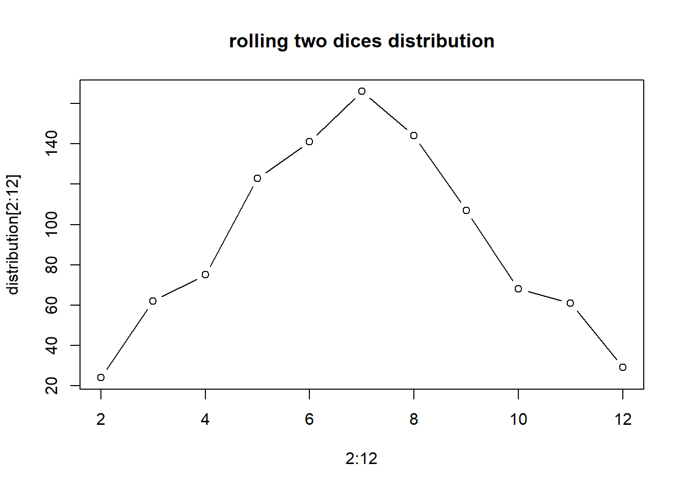

IMPORTANT: You can delete everything in here and start fresh. You might want to start by not deleting anything above this line until you know what that stuff is doing.
This is an .Rmd file. It is plain text with special features. Any time you write just like this, it will be compiled to normal text in the website. If you put a # in front of your text, it will create a top level-header.
2018 | 7 | 23 Last compiled: 2023-04-09
Notice that whatever you define as a top level header, automatically gets put into the table of contents bar on the left.
You can add more headers by adding more hashtags. These won’t be put into the table of contents
Here’s an even lower level header
2018 | 7 | 23 Last compiled: 2023-04-09
I’m writing this tutorial going from the top down. And, this is how it will be printed. So, notice the second post is second in the list. If you want your most recent post to be at the top, then make a new post starting at the top. If you want the oldest first, do, then keep adding to the bottom
So far this is just a blog where you can write in plain text and serve your writing to a webpage. One of the main purposes of this lab journal is to record your progress learning R. The reason I am asking you to use this process is because you can both make a website, and a lab journal, and learn R all in R-studio. This makes everything really convenient and in the sam place.
So, let’s say you are learning how to make a histogram in R. For example, maybe you want to sample 100 numbers from a normal distribution with mean = 0, and standard deviation =1, and then you want to plot a histogram. You can do this right here by using an r code block, like this:
samples <- rnorm(100, mean=0, sd=1)
hist(samples)When you knit this R Markdown document, you will see that the histogram is printed to the page, along with the R code. This document can be set up to hide the R code in the webpage, just delete the comment (hashtag), from the cold folding option in the yaml header up top. For purposes of letting yourself see the code, and me see the code, best to keep it the way that it is. You learn all of these things and more can be customized in each R code block.
Use this lab journal to record what you do in R. This way I will be able to see what you are doing and help you along the way. You will also be creating a repository of all the things you do. You can make posts about everything. Learning specific things in R (project unrelated), and doing things for the project that we will discuss at the beginning of the Fall semester. You can get started now by fiddling around with googling things, and trying stuff out in R. I’ve placed some helpful starting links in the links page on this website
It’s hard to learn programming when you don’t have specific problems that you are trying to solve. Everything just seems abstract.
I wrote an introductory programming book that introduces R, and gives some concrete problems for you to solve.
To get the hang of journaling and solving the problems to learn programming, my suggestion is that you use this .Rmd file to solve the problems. It would look like this:
Do simple math with numbers, addition, subtraction, multiplication, division
1+2## [1] 32*5## [1] 105/3## [1] 1.666667(1+6+4)/5## [1] 2.2Put numbers into variables, do simple math on the variables
a<-1
b<-2
a+b## [1] 3d<-c(1,2,3)
e<-c(5,6,7)
d+e## [1] 6 8 10d*e## [1] 5 12 21d/e## [1] 0.2000000 0.3333333 0.4285714Write code that will place the numbers 1 to 100 separately into a variable using for loop. Then, again using the seq function.
# for loop solution
# i becomes the number 1 to 100 at each step of the loop
a <- length(100) # make empty variable, set length to 100
for (i in 1:100){
a[i] <-i #assigns the number in i, to the ith index of a
}
print(a)## [1] 1 2 3 4 5 6 7 8 9 10 11 12 13 14 15 16 17 18
## [19] 19 20 21 22 23 24 25 26 27 28 29 30 31 32 33 34 35 36
## [37] 37 38 39 40 41 42 43 44 45 46 47 48 49 50 51 52 53 54
## [55] 55 56 57 58 59 60 61 62 63 64 65 66 67 68 69 70 71 72
## [73] 73 74 75 76 77 78 79 80 81 82 83 84 85 86 87 88 89 90
## [91] 91 92 93 94 95 96 97 98 99 100# for loop solution #2
a<-c() #create empty variable using combine command
for (i in 1:100){
a<-c(a,i) # keeps combining a with itself and the new number in i
}
print(a)## [1] 1 2 3 4 5 6 7 8 9 10 11 12 13 14 15 16 17 18
## [19] 19 20 21 22 23 24 25 26 27 28 29 30 31 32 33 34 35 36
## [37] 37 38 39 40 41 42 43 44 45 46 47 48 49 50 51 52 53 54
## [55] 55 56 57 58 59 60 61 62 63 64 65 66 67 68 69 70 71 72
## [73] 73 74 75 76 77 78 79 80 81 82 83 84 85 86 87 88 89 90
## [91] 91 92 93 94 95 96 97 98 99 100# seq solution
a <- seq(1,100,1) # look up help for seq using ?seq() in console
print(a)## [1] 1 2 3 4 5 6 7 8 9 10 11 12 13 14 15 16 17 18
## [19] 19 20 21 22 23 24 25 26 27 28 29 30 31 32 33 34 35 36
## [37] 37 38 39 40 41 42 43 44 45 46 47 48 49 50 51 52 53 54
## [55] 55 56 57 58 59 60 61 62 63 64 65 66 67 68 69 70 71 72
## [73] 73 74 75 76 77 78 79 80 81 82 83 84 85 86 87 88 89 90
## [91] 91 92 93 94 95 96 97 98 99 100Find the sum of all the integer numbers from 1 to 100
# use the sum() function on a vector of numbers
print(sum(1:100))## [1] 5050# How would you do this without using the sum function? For example, how could you use a for loop to accomplish this task?
x<-1:100
total<-0
for (i in x) {
total <- total + i
}
print(total)## [1] 5050Write a function to find the sum of all integers between any two values.
my_sum <- function(start, end) {
x<-start:end
total<-0
for (i in x) {
total <- total + i
}
return (total)
}
print(my_sum(1, 100))## [1] 5050List all of the odd numbers from 1 to 100.
# you could use the seq() function
seq(1, 100, 2)## [1] 1 3 5 7 9 11 13 15 17 19 21 23 25 27 29 31 33 35 37 39 41 43 45 47 49
## [26] 51 53 55 57 59 61 63 65 67 69 71 73 75 77 79 81 83 85 87 89 91 93 95 97 99# How could you do this without using the seq() function? Consider using the mod function %%, which evaluates whether or not there is a remainder when dividing one number by another.
r <- c()
for (i in 1:100) {
if (i%%2 == 1)
r <- c(r, i)
}
print(r)## [1] 1 3 5 7 9 11 13 15 17 19 21 23 25 27 29 31 33 35 37 39 41 43 45 47 49
## [26] 51 53 55 57 59 61 63 65 67 69 71 73 75 77 79 81 83 85 87 89 91 93 95 97 99List all of the prime numbers from 1 to 1000
is_prime <- function(x) {
if (x < 3)
return(TRUE)
for (i in 2:sqrt(x)) {
if (x %% i == 0)
return(FALSE)
}
return(TRUE)
}
get_primes <- function(vec) {
r <- c()
for (x in vec) {
if (is_prime(x))
r <- c(r, x)
}
return(r)
}
print(get_primes(1:1000))## [1] 1 2 3 5 7 11 13 17 19 23 29 31 37 41 43 47 53 59
## [19] 61 67 71 73 79 83 89 97 101 103 107 109 113 127 131 137 139 149
## [37] 151 157 163 167 173 179 181 191 193 197 199 211 223 227 229 233 239 241
## [55] 251 257 263 269 271 277 281 283 293 307 311 313 317 331 337 347 349 353
## [73] 359 367 373 379 383 389 397 401 409 419 421 431 433 439 443 449 457 461
## [91] 463 467 479 487 491 499 503 509 521 523 541 547 557 563 569 571 577 587
## [109] 593 599 601 607 613 617 619 631 641 643 647 653 659 661 673 677 683 691
## [127] 701 709 719 727 733 739 743 751 757 761 769 773 787 797 809 811 821 823
## [145] 827 829 839 853 857 859 863 877 881 883 887 907 911 919 929 937 941 947
## [163] 953 967 971 977 983 991 997Generate 100 random numbers
Generate 100 random numbers within a specific range
runif(100, 1, 10)## [1] 4.252633 7.972472 3.613203 4.145282 5.001321 5.742018 9.335664 5.186791
## [9] 2.842020 8.038236 9.669601 9.028053 2.567798 9.283227 2.343468 1.130219
## [17] 8.964423 2.718414 8.924250 1.036831 1.548533 7.160634 1.108728 8.868634
## [25] 8.182396 8.903722 4.334559 7.619379 6.710711 7.963545 8.954409 1.339850
## [33] 7.091570 3.763956 5.402858 4.043711 9.996671 4.347432 8.995459 8.539312
## [41] 5.020775 5.986317 4.635807 7.297792 1.611969 4.276330 6.805686 6.113334
## [49] 3.465975 4.440943 6.191592 7.515160 8.654810 2.852862 1.348881 6.836344
## [57] 2.165896 9.050624 2.791688 6.114373 4.743072 5.404369 1.702337 1.262482
## [65] 5.975191 8.132210 7.768646 7.139596 4.066466 7.887126 8.034418 2.751083
## [73] 8.956593 6.414718 7.205239 9.643989 1.755067 5.581528 1.151007 1.816033
## [81] 1.371720 5.774461 6.059828 4.242382 5.489822 4.337602 7.138057 3.697430
## [89] 3.838804 4.546443 7.889486 1.416938 1.336684 2.512039 9.407211 9.927211
## [97] 6.739731 8.781880 4.112321 3.326558Write your own functions to give descriptive statistics for a vector variable storing multiple numbers. Write functions for the following without using R intrinsics: mean, mode, median, range, standard deviation
mean_a <- function(v) {
return (sum(v)/length(v))
}
mode_a <- function(v) {
# count individual values
values <- c()
counts <- c()
for (x in v) {
# find whether it exists in values
index <- -1
if (length(values) > 0) {
for (i in 1:length(values)) {
if (values[i] == x) {
index <- i;
break
}
}
}
# if exists
if (index != -1) {
counts[index] <- counts[index] + 1
}
else {
values <- c(values, x)
counts <- c(counts, 1)
}
}
# find the max counted value
m_value <- NULL
m_count <- 0
for (i in 1:length(values)) {
if (counts[i] > m_count) {
m_value <- c(values[i])
m_count = counts[i]
}
else if (counts[i] == m_count) {
m_value <- c(m_value, values[i])
}
}
return(m_value)
}
# simple sort which is used in median_a()
sort_a <- function(v) {
if (length(v) < 2)
return(v)
r <- c(v)
for (i in 1:(length(r) - 1)) {
for (j in (i + 1):length(r)) {
if (r[i] > r[j]) {
t <- r[i]
r[i] <- r[j]
r[j] <- t
}
}
}
return(r)
}
median_a <- function(v) {
s <- sort_a(v)
l <- length(s)
if (l%%2 == 1) {
return(s[round(l / 2)])
}
else
return(s[l/2]/2 + s[l/2+1]/2)
}
range_a <- function(v) {
s <- sort_a(v)
return(c(s[1], s[length(s)]))
}
std_a <- function(v) {
n <- length(v)
s_x <- 0
s_x2 <- 0
for (x in v) {
s_x <- s_x + x
s_x2 <- s_x2 + x * x
}
ss <- s_x2 - s_x ^ 2 / n
r <- sqrt(ss/(n-1))
return(r)
}
v <- c(4, 10, 7, 8, 6, 6, 8)
sprintf("mean = %.2f", mean_a(v))## [1] "mean = 7.00"print("mode =")## [1] "mode ="print(mode_a(v))## [1] 8 6print("sort =")## [1] "sort ="print(sort_a(v))## [1] 4 6 6 7 8 8 10print("median = ")## [1] "median = "print(median_a(v))## [1] 7print("test median on a vector with a even length")## [1] "test median on a vector with a even length"print(median_a(c(4, 10, 8, 6, 6, 8)))## [1] 7print("range = ")## [1] "range = "print(range_a(v))## [1] 4 10print("standard deviation = ")## [1] "standard deviation = "print(std_a(v))## [1] 1.914854Count the number of characters in a string variable
a <- "abcdefg"
print(nchar(a))## [1] 7Count the number of words in a string variable
a <- "I love panda"
words <- strsplit(a, " ")
count <- length(unlist(words))
print(count)## [1] 3Count the number of sentences in a string variable
(almost the same as #12, skip)
Count the number of times a specific character occurs in a string variable
count_char_in_str <- function(str, ch) {
a <- unlist(strsplit(str, ch))
return(length(a) - 1)
}
count_char_in_str("abcdefabc", "b")## [1] 2Do a logical test to see if one word is found within the text of another string variable
is_contain <- function(word, sentence) {
ls<-unlist(strsplit(sentence, " "))
return(word%in%ls)
}
test_word <- "hello"
test_sentence <-"is the word hello in this sentence"
print(is_contain(test_word, test_sentence))## [1] TRUEPut the current computer time in milliseconds into a variable
print(as.numeric(Sys.time())*1000, digits=15)## [1] 1681076444048.89Measure how long a piece of code takes to run by measuring the time before the code is run, and after the code is run, and taking the difference to find the total time
get_timestamp<-function() {
return(as.numeric(Sys.time())*1000)
}
start_time<-get_timestamp()
random<-runif(1000)
std<-sd(random)
end_time<-get_timestamp()
interval<-end_time - start_time
print(interval)## [1] 13.79785Read a .txt file or .csv file into a variable
str<-"abcdef"
file_name<-"test.txt"
write.csv(str, file_name)
str2<-read.csv(file_name)
print(str2)## X x
## 1 1 abcdefOutput the contents of a variable to a .txt file (skip)
Create a variable that stores a 20x20 matrix of random numbers
random<-runif(20 * 20)
a <- matrix(random, ncol=20)
print(a)## [,1] [,2] [,3] [,4] [,5] [,6]
## [1,] 0.6094192 0.90275232 0.72312641 0.005408591 0.20264590 0.80420732
## [2,] 0.2819418 0.22812340 0.49227737 0.424122683 0.51832281 0.56157064
## [3,] 0.3506066 0.11604786 0.93009558 0.896980285 0.78605560 0.05300768
## [4,] 0.1350395 0.03266728 0.87537478 0.462398821 0.25479879 0.39323179
## [5,] 0.5450010 0.34803705 0.96903762 0.480346025 0.18782703 0.95244707
## [6,] 0.1205664 0.57949542 0.42033648 0.514288809 0.33062646 0.18057184
## [7,] 0.3709890 0.73787459 0.35636825 0.117145171 0.92352139 0.21328597
## [8,] 0.9973707 0.81231922 0.20645630 0.973994978 0.16091365 0.47973101
## [9,] 0.6013871 0.34567764 0.18384226 0.864560977 0.69903146 0.96570539
## [10,] 0.3097363 0.29479343 0.74915094 0.520622124 0.05315955 0.61249422
## [11,] 0.6411003 0.54951925 0.79781839 0.107022831 0.00691003 0.92461185
## [12,] 0.5001361 0.01651361 0.26659033 0.368818179 0.38038404 0.15407090
## [13,] 0.7511040 0.61361105 0.64667931 0.097036683 0.87244669 0.27830340
## [14,] 0.9307492 0.98053361 0.17926534 0.855821322 0.28315244 0.24273994
## [15,] 0.2882409 0.72554572 0.04957870 0.648600938 0.98036009 0.90620591
## [16,] 0.0554803 0.22571408 0.42232372 0.135859232 0.49233948 0.64463271
## [17,] 0.0882553 0.86247442 0.24040033 0.782311134 0.53011093 0.69549934
## [18,] 0.9365300 0.50187029 0.11307278 0.777424264 0.15810114 0.56142233
## [19,] 0.9343720 0.79412608 0.04336124 0.103600893 0.24595967 0.72197878
## [20,] 0.9416641 0.93875617 0.04303751 0.021200833 0.05602007 0.58930309
## [,7] [,8] [,9] [,10] [,11] [,12]
## [1,] 0.7740949 0.04247885 0.32261189 0.464743758 0.7662588 0.61564201
## [2,] 0.5984136 0.58424401 0.78664075 0.691471774 0.7379016 0.65978502
## [3,] 0.9344775 0.32197620 0.08146501 0.412912829 0.6726006 0.95085044
## [4,] 0.4949393 0.43496982 0.36006857 0.331092522 0.7715103 0.50632244
## [5,] 0.7717344 0.39057196 0.93857202 0.999890533 0.4604605 0.85359274
## [6,] 0.7920527 0.61103576 0.26163582 0.099683605 0.6906882 0.05554015
## [7,] 0.9128252 0.82111870 0.70895716 0.599722792 0.4476428 0.65163481
## [8,] 0.4428654 0.50001234 0.19474436 0.859247044 0.2750584 0.51781460
## [9,] 0.7569292 0.19450729 0.65919927 0.047251302 0.2949352 0.28922891
## [10,] 0.2454549 0.94981559 0.21172452 0.644170114 0.1540567 0.26633994
## [11,] 0.2985020 0.85727096 0.79851161 0.366600715 0.1697196 0.87069514
## [12,] 0.3522005 0.70679612 0.87219839 0.690126569 0.4046131 0.81980416
## [13,] 0.8630127 0.48439868 0.42268176 0.089765234 0.2775511 0.99975536
## [14,] 0.2283839 0.43391666 0.48224699 0.006910961 0.7767284 0.87806457
## [15,] 0.3543992 0.08729450 0.39862953 0.253786076 0.8311605 0.76131261
## [16,] 0.6406987 0.70446558 0.80841886 0.181258376 0.9810209 0.63380501
## [17,] 0.9553337 0.17734220 0.89840000 0.888008374 0.4503367 0.24662771
## [18,] 0.8970096 0.96480580 0.26597939 0.561912906 0.9779739 0.78724417
## [19,] 0.9207194 0.17344104 0.10281023 0.571598302 0.1386842 0.39176998
## [20,] 0.4712953 0.66938965 0.49573990 0.302459263 0.7688013 0.89644002
## [,13] [,14] [,15] [,16] [,17] [,18]
## [1,] 0.010643348 0.42011607 0.9325972 0.8738610 0.27797293 0.09017927
## [2,] 0.724773475 0.01520151 0.7495799 0.8089224 0.67179665 0.14480900
## [3,] 0.020999228 0.47436258 0.5258030 0.4028328 0.31754121 0.55570932
## [4,] 0.261342261 0.32652241 0.4468380 0.5400153 0.81587022 0.14432818
## [5,] 0.380033414 0.21326008 0.9046183 0.4915166 0.91592167 0.44485499
## [6,] 0.004665896 0.55850164 0.2041819 0.4017301 0.30404614 0.64342779
## [7,] 0.035750016 0.43568240 0.7965798 0.8546555 0.44834419 0.29437015
## [8,] 0.819116126 0.64035096 0.9111941 0.9150034 0.87471013 0.50440022
## [9,] 0.897670396 0.26207553 0.4208068 0.2791306 0.93727892 0.44440133
## [10,] 0.998282030 0.11950518 0.3834546 0.9625221 0.68179405 0.54212729
## [11,] 0.784884672 0.28552171 0.1276877 0.5765137 0.17319702 0.66623474
## [12,] 0.289337545 0.83268276 0.3332195 0.5470359 0.82462833 0.70125859
## [13,] 0.494555217 0.12618983 0.7892982 0.8449523 0.16212292 0.15924705
## [14,] 0.748939320 0.27963734 0.3333481 0.1777178 0.11138737 0.81035872
## [15,] 0.369150997 0.26940622 0.3871851 0.6165946 0.19362763 0.85188563
## [16,] 0.851413556 0.63440661 0.1089042 0.2239126 0.80148873 0.55051019
## [17,] 0.782028810 0.81546478 0.1822861 0.8864227 0.86117311 0.80225298
## [18,] 0.007571496 0.32438138 0.3808434 0.6083676 0.59471249 0.76203889
## [19,] 0.735970156 0.64708894 0.6018446 0.2615888 0.06723176 0.33065633
## [20,] 0.264947341 0.98324313 0.8557147 0.9889042 0.70136323 0.18858464
## [,19] [,20]
## [1,] 0.2977471545 0.93731896
## [2,] 0.4967709603 0.40367312
## [3,] 0.9804645276 0.66974287
## [4,] 0.3055695591 0.33812870
## [5,] 0.1754095163 0.54185816
## [6,] 0.1040595213 0.65977950
## [7,] 0.8593263647 0.82375360
## [8,] 0.3586119527 0.33097006
## [9,] 0.9565171101 0.49014265
## [10,] 0.5897307079 0.32337336
## [11,] 0.3222254303 0.62573175
## [12,] 0.1722301852 0.46244634
## [13,] 0.0097489997 0.05241460
## [14,] 0.1067866376 0.19817092
## [15,] 0.3185427871 0.07289066
## [16,] 0.6467546534 0.87454727
## [17,] 0.0009340819 0.24430977
## [18,] 0.4099632155 0.40098673
## [19,] 0.5134171303 0.27851791
## [20,] 0.7563812048 0.22026817Output any matrix to a txt file using commas or tabs to separate column values, and new lines to separate row values
random<-runif(5 * 5)
a <- matrix(random, ncol=5)
print(a)## [,1] [,2] [,3] [,4] [,5]
## [1,] 0.6430609 0.7067312 0.09897908 0.7032486 0.41923377
## [2,] 0.2647214 0.4921460 0.32442650 0.6099267 0.02196331
## [3,] 0.5352097 0.5907730 0.58510829 0.3262495 0.02815580
## [4,] 0.8547449 0.8011167 0.73888708 0.2254542 0.03266699
## [5,] 0.7947708 0.5224631 0.74300405 0.5584107 0.02227412file_name <- "matrix.csv"
write.csv(a, file_name)
b <- data.matrix(read.csv(file_name))
print(b)## X V1 V2 V3 V4 V5
## [1,] 1 0.6430609 0.7067312 0.09897908 0.7032486 0.41923377
## [2,] 2 0.2647214 0.4921460 0.32442650 0.6099267 0.02196331
## [3,] 3 0.5352097 0.5907730 0.58510829 0.3262495 0.02815580
## [4,] 4 0.8547449 0.8011167 0.73888708 0.2254542 0.03266699
## [5,] 5 0.7947708 0.5224631 0.74300405 0.5584107 0.02227412List the numbers from 1 to 100 with the following constraints. If the number can be divided by three evenly, then print Fizz instead of the number. If the number can be divided by five evenly, then print Buzz instead of the number. Finally, if the number can be divided by three and five evenly, then print FizzBuzz instead of the number.
(too simple, skip)
Take text as input, and be able to produce a table that shows the counts for each character in the text. This problem is related to the earlier easy problem asking you to count the number of times that a single letter appears in a text. The slightly harder problem is the more general version: count the frequencies of all unique characters in a text.
# locate and return the first index of an element in a vector
# return 0 if no found
index_of <- function(e, v) {
if (length(v) == 0)
return(0)
idx <- 0
for (i in 1:length(v)) {
if (e == v[i]) {
idx <- i
break
}
}
return(idx)
}
frequency_count <- function(str) {
v <- unlist(strsplit(str, ""))
labels <- unique(v)
counts <- rep(0, length(labels))
for (ch in v) {
idx <- index_of(ch, labels)
counts[idx] <- counts[idx] + 1
}
df <- data.frame(labels, counts)
return(df)
}
print(frequency_count("abcdedcb"))## labels counts
## 1 a 1
## 2 b 2
## 3 c 2
## 4 d 2
## 5 e 1Test the random number generator for a flat distribution. Generate a few million random numbers between 0 and 100. Count the number of 0s, 1s, 2s, 3s, etc. all the way up to 100. Look at the counts for each of the numbers and determine if they are relatively equal. For example, you could plot the counts in Excel to make a histogram. If all of the bars are close to being flat, then each number had an equal chance of being selected, and the random number generator is working without bias.
num <- 1000000
samples <- round(runif(num, 0, 100))
hist(samples, breaks = 0:100)Generate a matrix for a multiplication table. For example, the labels for the columns could be the numbers 1 to 10, and the labels for the rows could be the numbers 1 to 10. The contents of each of the cells in the matrix should be correct answer for multiplying the column value by the row value.
v <- 1:10
for (i in 2:10) {
v <- c(v, (1:10) * i)
}
m <- matrix(v, nrow=10)
print(m)## [,1] [,2] [,3] [,4] [,5] [,6] [,7] [,8] [,9] [,10]
## [1,] 1 2 3 4 5 6 7 8 9 10
## [2,] 2 4 6 8 10 12 14 16 18 20
## [3,] 3 6 9 12 15 18 21 24 27 30
## [4,] 4 8 12 16 20 24 28 32 36 40
## [5,] 5 10 15 20 25 30 35 40 45 50
## [6,] 6 12 18 24 30 36 42 48 54 60
## [7,] 7 14 21 28 35 42 49 56 63 70
## [8,] 8 16 24 32 40 48 56 64 72 80
## [9,] 9 18 27 36 45 54 63 72 81 90
## [10,] 10 20 30 40 50 60 70 80 90 100Turn any normal english text into an encrypted version of the text, and be able to turn any decrypted text back into normal english text. A simple encryption would be to scramble the alphabet such that each letter corresponds to a new randomly chosen (but unique) letter.
# create a random key
create_key <- function() {
ascii <- as.raw(32:126) # all displayable characters
original <- sapply(ascii, rawToChar)
# shuffle
for (i in 1:(length(ascii)*100)) {
ran <- round(runif(2, 1, length(ascii)))
t <- ascii[ran[1]]
ascii[ran[1]] <- ascii[ran[2]]
ascii[ran[2]] <- t
}
shuffled <- sapply(ascii, rawToChar)
df <- data.frame(original, shuffled)
return(df)
}
encrypt <- function(text, key) {
if (text == "")
return("")
r = unlist(strsplit(text, ""))
for (i in 1:length(r)) {
r[i] <- key[key$original == r[i],]$shuffled
}
return(paste(r, collapse=""))
}
decrypt <- function(text, key) {
if (text == "")
return("")
r = unlist(strsplit(text, ""))
for (i in 1:length(r)) {
r[i] <- key[key$shuffled == r[i],]$original
}
return(paste(r, collapse=""))
}
key <- create_key()
print(key)## original shuffled
## 1 !
## 2 ! F
## 3 " l
## 4 # 9
## 5 $ :
## 6 % D
## 7 & J
## 8 ' W
## 9 ( 7
## 10 ) G
## 11 * t
## 12 + 3
## 13 , z
## 14 - ^
## 15 . e
## 16 / %
## 17 0 s
## 18 1 k
## 19 2 ]
## 20 3 -
## 21 4 .
## 22 5 1
## 23 6 u
## 24 7 "
## 25 8 m
## 26 9 g
## 27 : Z
## 28 ; =
## 29 < X
## 30 = \\
## 31 > `
## 32 ? ,
## 33 @ L
## 34 A h
## 35 B a
## 36 C T
## 37 D j
## 38 E _
## 39 F K
## 40 G
## 41 H I
## 42 I '
## 43 J v
## 44 K }
## 45 L o
## 46 M B
## 47 N +
## 48 O ~
## 49 P *
## 50 Q >
## 51 R 4
## 52 S y
## 53 T <
## 54 U S
## 55 V 6
## 56 W #
## 57 X ?
## 58 Y n
## 59 Z b
## 60 [ V
## 61 \\ M
## 62 ] f
## 63 ^ 2
## 64 _ C
## 65 ` A
## 66 a Q
## 67 b w
## 68 c |
## 69 d )
## 70 e R
## 71 f x
## 72 g E
## 73 h (
## 74 i N
## 75 j {
## 76 k 0
## 77 l @
## 78 m Y
## 79 n d
## 80 o H
## 81 p q
## 82 q 5
## 83 r &
## 84 s 8
## 85 t r
## 86 u U
## 87 v p
## 88 w [
## 89 x $
## 90 y /
## 91 z P
## 92 { O
## 93 | c
## 94 } i
## 95 ~ ;original_text <- "I love panda!"
encrypted_text <- encrypt(original_text, key)
decrypted_text <- decrypt(encrypted_text, key)
sprintf("original text = %s", original_text)## [1] "original text = I love panda!"sprintf("encrypted text = %s", encrypted_text)## [1] "encrypted text = '!@HpR!qQd)QF"sprintf("decrypted text = %s", decrypted_text)## [1] "decrypted text = I love panda!"Your task here is to write an algorithm that can simulate playing the above depicted Snakes and Ladders board. You should assume that each roll of the dice produces a random number between 1 and 6. After you are able to simulate one played game, you will then write a loop to simulate 1000 games, and estimate the average number of dice rolls needed to successfully complete the game
create_game_board <- function() {
targets <- 1:25
targets[3] <- 11
targets[6] <- 17
targets[9] <- 18
targets[10] <- 12
targets[14] <- 4
targets[19] <- 8
targets[22] <- 20
targets[24] <- 16
return(targets)
}
play_a_game <- function(board) {
roll_count <- 0
position <- 1
while (position <= 25) {
roll_count <- roll_count + 1
roll <- sample(1:6, 1)
position <- position + roll
if (position <= 25)
position <- board[position]
}
return(roll_count)
}
board <- create_game_board()
print(board)## [1] 1 2 11 4 5 17 7 8 18 12 11 12 13 4 15 16 17 18 8 20 21 20 23 16 25rounds <- 1000
total_rolls <- 0
for (i in 1:rounds) {
total_rolls <- total_rolls + play_a_game(board)
}
sprintf("Average dice rolls is %2f", total_rolls/rounds)## [1] "Average dice rolls is 8.873000"Assume that a pair of dice are rolled. Using monte carlo-simulation, compute the probabilities of rolling a 2, 3, 4, 5, 6, 7, 8, 9, 10, 11, and 12, respectively.
dice <- function(max = 6) {
return(sample(1:max, 1))
}
roll_two_dices <- function(times) {
r <- rep(0, 12)
for (i in 1:times) {
sample = dice() + dice()
# print(sample)
r[sample] <- r[sample] + 1
}
return(r)
}
distribution <- roll_two_dices(1000)
plot(2:12, distribution[2:12], type="b", main="rolling two dices distribution") # 8. Monte Hall problem.
The monte-hall problem is as follows. A contestant in a game show is presented with three closed doors. They are told that a prize is behind one door, and two goats are behind the other two doors. They are asked to choose which door contains the prize. After making their choice the game show host opens one of the remaining two doors (not chosen by the contestant), and reveals a goat. There are now two door remaining. The contestant is asked if they would like to switch their choice to the other door, or keep their initial choice. The correct answer is that the participant should switch their initial choice, and choose the other door. This will increase their odds of winning. Demonstrate by monte-carlo simulation that the odds of winning is higher if the participant switches than if the participants keeps their original choice.
# return win counts
play_with_keep <- function(times) {
win <- 0
for (i in 1:times) {
x <- 1:3
target <- sample(x, 1)
choice <- sample(x, 1)
if (target == choice)
win <- win + 1
}
return(win)
}
play_with_switch <- function(times) {
win <- 0
for (i in 1:times) {
x <- 1:3
target <- sample(x, 1)
initial <- sample(x, 1)
open <- sample(x[! x %in% c(target, initial)], 1)
choice <- 6 - initial - open
if (target == choice)
win <- win + 1
}
return(win)
}
rounds <- 10000
sprintf("winning rate for playing with keep = %f", play_with_keep(rounds)/rounds)## [1] "winning rate for playing with keep = 0.331000"sprintf("winning rate for playing with switch = %f", play_with_switch(rounds)/rounds)## [1] "winning rate for playing with switch = 0.408000"Problem: You have 100 doors in a row that are all initially closed. You make 100 passes by the doors. The first time through, you visit every door and toggle the door (if the door is closed, you open it; if it is open, you close it). The second time you only visit every 2nd door (door 2, 4, 6, etc.). The third time, every 3rd door (door 3, 6, 9, etc.), etc, until you only visit the 100th door.
Question: What state are the doors in after the last pass? Which are open, which are closed?
# all closed initially
state <- rep(0, 100)
# walk 100 times
for (round in 1:100) {
for (door in seq(round, 100, round)) {
state[door] <- 1 - state[door]
}
}
print(state)## [1] 1 0 0 1 0 0 0 0 1 0 0 0 0 0 0 1 0 0 0 0 0 0 0 0 1 0 0 0 0 0 0 0 0 0 0 1 0
## [38] 0 0 0 0 0 0 0 0 0 0 0 1 0 0 0 0 0 0 0 0 0 0 0 0 0 0 1 0 0 0 0 0 0 0 0 0 0
## [75] 0 0 0 0 0 0 1 0 0 0 0 0 0 0 0 0 0 0 0 0 0 0 0 0 0 1In this puzzle, write code to print out the entire “99 bottles of beer on the wall”” song. For those who do not know the song, the lyrics follow this form: X bottles of beer on the wall X bottles of beer Take one down, pass it around X-1 bottles of beer on the wall
Where X and X-1 are replaced by numbers of course, from 99 all the way down to 0.
(too simple, skip)
Imagine that two players make completely random choices when playing tic-tac-toe. Each game will either end in a draw or one of the two players will win. Create a monte-carlo simulation of this “random” version of tic-tac-toe. Out 10,000 simulations, what proportion of the time is the game won versus drawn?
# return the winner on the board, that is 1 or 2
# if none wins, return 0
get_winner <- function(board) {
checks <- c(
c(1, 2, 3),
c(4, 5, 6),
c(7, 8, 9),
c(1, 4, 7),
c(2, 5, 8),
c(3, 6, 9),
c(1, 5, 9),
c(3, 5, 7)
)
for (row in 1:(length(checks)/3)) {
check <- checks[(row * 3 - 2):(row * 3)]
if (board[check[1]] > 0 && board[check[1]] * 2 == board[check[2]] + board[check[3]]) {
return(board[check[1]])
}
}
return(0)
}
# return the winning player, that is 1 or 2; if no player wins, return 0
tic_tac_toe <- function(is_debug = FALSE) {
board <- rep(0, 9)
empty_cells <- 1:9
player <- 2 # before the first player plays, it was the turn of the second player
while (length(empty_cells) > 0) {
player <- 3 - player
choice <- sample(empty_cells, 1)
board[choice] = player
empty_cells <- empty_cells[empty_cells != choice]
if (is_debug) {
print(sprintf("player %.0f chooce %.0f", player, choice))
print(board)
}
winner <- get_winner(board)
if (winner > 0) {
if (is_debug) {
print(sprintf("player %.0f wins", player))
}
return(winner)
}
}
if (is_debug) {
print("drawn")
}
return(0)
}
rounds <- 1000
winners <- rep(0, 2)
for (i in 1:rounds) {
w <- tic_tac_toe()
if (w > 0)
winners[w] <- winners[w] + 1
}
for (i in 1:2) {
print(sprintf("player #%.0f wins rate %.3f%%.", i, winners[i] / rounds * 100))
}## [1] "player #1 wins rate 89.500%."
## [1] "player #2 wins rate 9.100%."print(sprintf("drawn games is %.3f%%", (rounds - winners[1] - winners[2]) / rounds * 100))## [1] "drawn games is 1.400%"